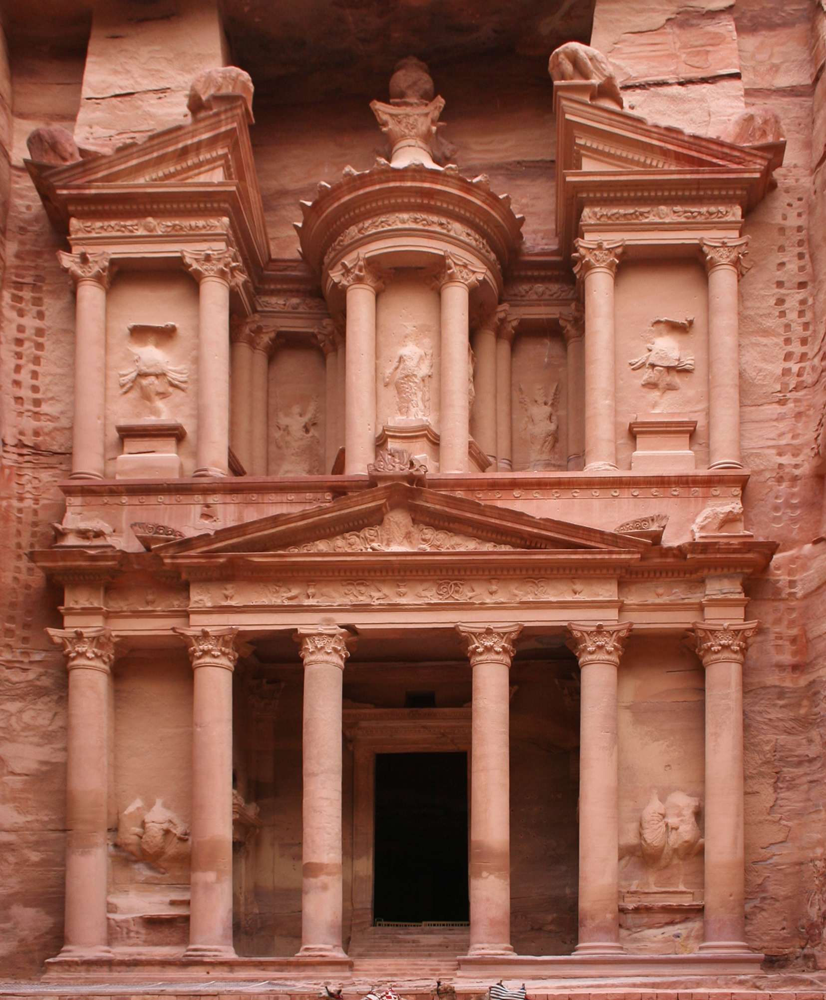

Petra originally known to its inhabitants as Raqmu or Raqēmō is a historic and archaeological city in southern Jordan. Famous for its rock-cut architecture and water conduit system, Petra is also called the "Rose City" because of the colour of the sandstone from which it is carved; it was called "a rose-red city half as old as time" in a poem of 1845 by John Burgon. It is adjacent to the mountain of Jabal Al-Madbah, in a basin surrounded by mountains forming the eastern flank of the Arabah valley running from the Dead Sea to the Gulf of Aqaba. Access to the city is through a picturesque 1.2-kilometre-longgorge called the Siq, which leads directly to the Khazneh.
